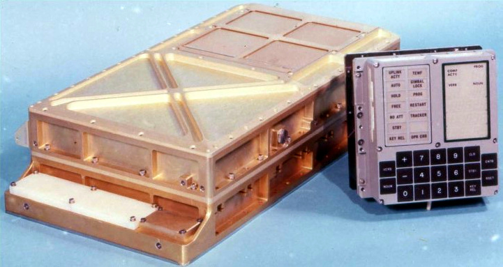

Who created the first embedded system and what was it used for?
The first real-time embedded system was created by Dr. Charles Stark Draper in the 1960’s. It was the Apollo Guidance Computer, which was used to automatically collect mission critical information for the Apollo Command Module and Lunar Module. [3]
The software for the AGC (Apollo Guidance Computer) was written in assembly language (partially because there was little other option at the time, and partially because of how close the code is to how the system actually operates).

The design for the AGC greatly influenced the design and development of future space systems, as well as the design of embedded systems in general.